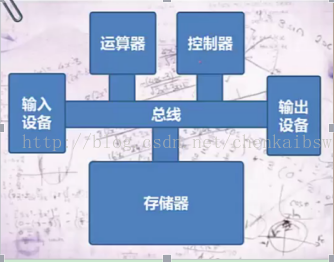

可执行程序

上面为冯诺依曼式计算机
指令执行的过程：
（1） 程序计数器PC将指令的地址发送给地址寄存器AR
（2）地址寄存器到响应的存储单元中将指令取出放入指令寄存器
（3） 指令寄存器将指令交给指令译码器ID进行译码，经过分析这条指令的操作数是一个地址
（4）控制器将指令中的地址传回地址寄存器AR
（6）在控制器的协调下，到相应的存储器中取出数据，将其送到运算器的缓冲寄存器DR
（7）缓冲寄存器将数据送到算数逻辑单元ALU
（8）操作控制器发送一个加一操作的信号给算数逻辑单元ALU
（9）ALU完成运算，并将运算结果放回到累加器中
详情请见：冯诺依曼式计算机